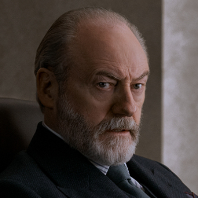

Thomas Wade
Apesar do fracasso inicial da missão, prossegue com o planejamento de longo prazo e sofre uma demonstração da interferência dos San-Ti.
Conteúdo até a temporada 1, episódio 8.
Ver Mapa de Conexões →Temporada 1
Acompanhe os acontecimentos registrados até o episódio escolhido.
Episódio 01 — Countdown
Dirige uma estrutura de inteligência que investiga a ameaça aos cientistas. Adota métodos pragmáticos e pouco transparentes.
Episódio 04 — Our Lord
Depois da morte de Jack, Wade e Shi propõem que Jin ajude a identificar a rede que a recrutou. Ela participa de um encontro da organização.
Episódio 05 — Judgment Day
Consegue recuperar os dados do navio e conhecer a natureza da ameaça já presente na Terra.
Episódio 06 — The Stars Our Destination
A exposição da ameaça força uma resposta internacional. Wade procura transformar o tempo até a chegada da frota em uma vantagem estratégica.
Episódio 07 — Only Advance
Planeja recorrer à hibernação para acompanhar uma defesa que pode durar séculos.
Episódio 08 — Wallfacer
Apesar do fracasso inicial da missão, prossegue com o planejamento de longo prazo e sofre uma demonstração da interferência dos San-Ti.
Personagens relacionados
- Clarence Shi (Da Shi)Investigação sob comando
- Jin ChengCooperação contra a ameaça
- Auggie SalazarNanofibras na operação do Panamá
- Guia do jogoRevelação dos sophons
- Will DowningCérebro para o Projeto Escada